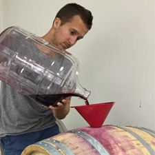
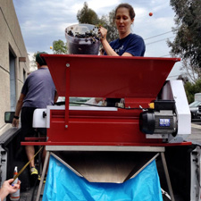

|  |
Step 1:
After a long day of picking grapes at the local vineyards, the grapes are brought to our facility
Step 2:
When they come in from the vineyard, the grapes are still attached to the vines
Step 3:
They are carefully gathered to be placed in the harvester
Step 4:
The harvester plucks the grapes off the vine so that they can be sorted
Step 5:
They are lovingly sorted with careful hands and watchful eyes
Step 6:
Now the grapes can be fermented
Step 7:
After fermentation, the grapes are pressed to extract the juice and leave behind the skins.
Step 8:
Finally, the juices are poured into oak barrels to age. We are now bottling and offering our newest releases for you to enjoy.
|
 |